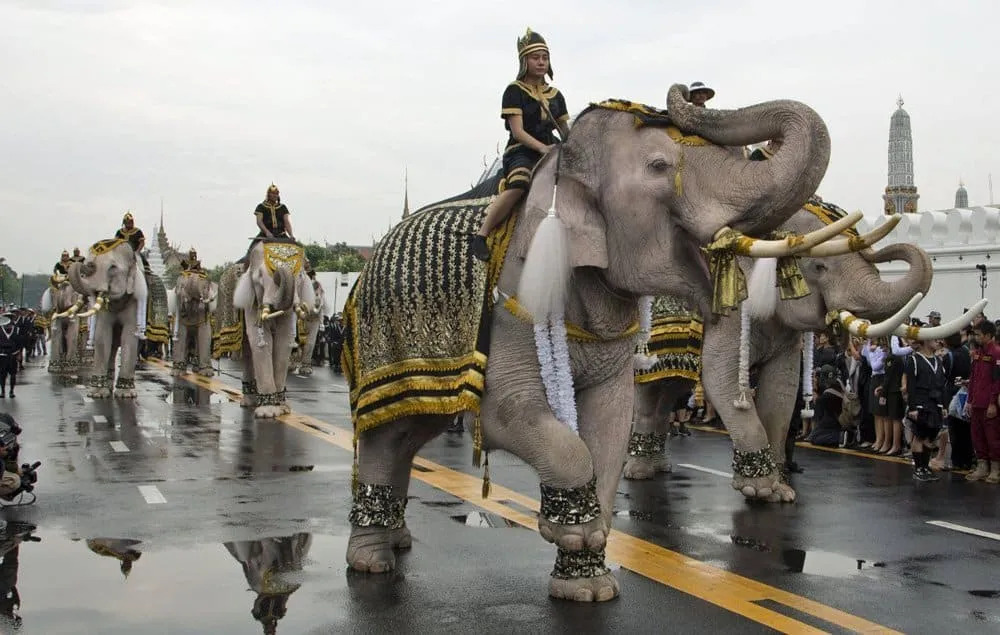

Thailand, yang dahulu dikenal dengan nama Siam, memiliki sejarah yang panjang dan kaya akan budaya. Kerajaan-kerajaan awal mulai berkembang di wilayah ini sejak abad ke-13, dengan Kerajaan Sukhothai yang sering dianggap sebagai cikal bakal negara Thailand modern. Pada masa ini, seni, budaya, bahasa, dan agama Buddha berkembang pesat serta menjadi dasar identitas bangsa Thailand hingga saat ini.
Setelah masa Sukhothai, Kerajaan Ayutthaya muncul sebagai pusat perdagangan dan kekuatan politik yang besar di Asia Tenggara. Ayutthaya menjalin hubungan dengan berbagai negara di Asia, Timur Tengah, hingga Eropa. Meskipun kerajaan ini jatuh pada tahun 1767, warisan budaya dan arsitekturnya masih dapat ditemukan di berbagai situs bersejarah Thailand.
Pada akhir abad ke-18, Kerajaan Rattanakosin didirikan dengan Bangkok sebagai ibu kota. Di bawah kepemimpinan para raja Dinasti Chakri, Thailand mengalami modernisasi di berbagai bidang. Berbeda dengan banyak negara Asia Tenggara lainnya, Thailand berhasil mempertahankan kemerdekaannya dan tidak pernah dijajah secara langsung oleh kekuatan Barat, menjadikannya satu-satunya negara di kawasan yang memiliki sejarah tersebut.
Saat ini, Thailand dikenal sebagai negara yang memadukan tradisi dan modernitas. Kuil-kuil bersejarah, istana kerajaan, festival budaya, serta perkembangan ekonomi dan pariwisata menjadikan Thailand salah satu destinasi paling populer di dunia.
Awal Kerajaan Sukhothai
Berakhirnya Ayutthaya
Bangkok Menjadi Ibu Kota